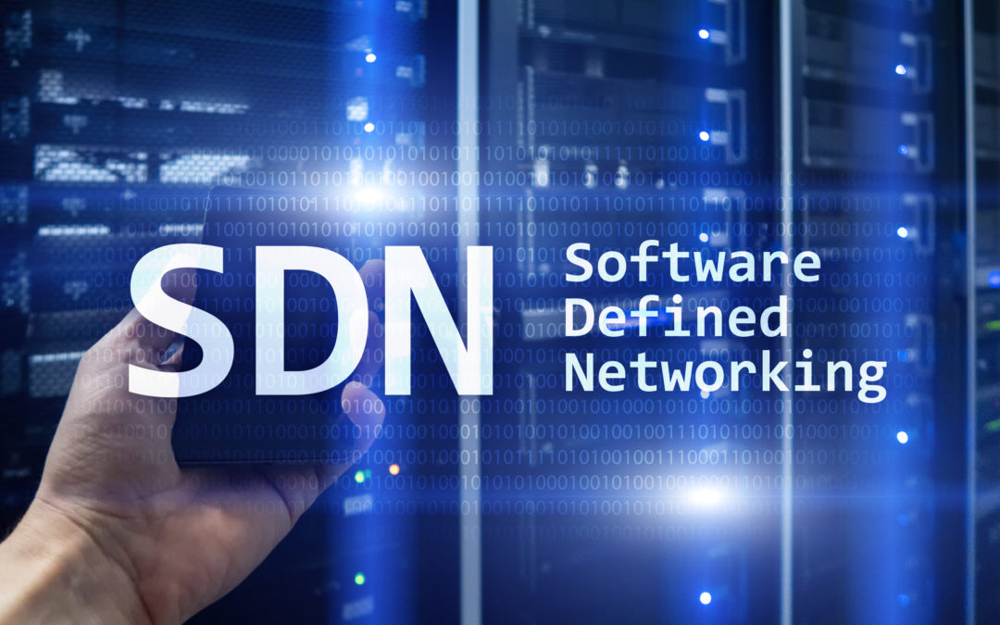
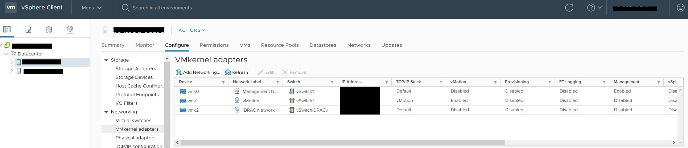
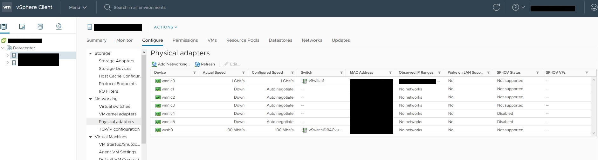
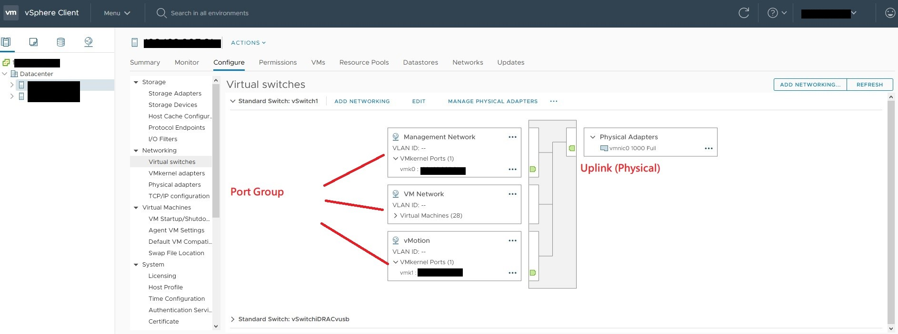
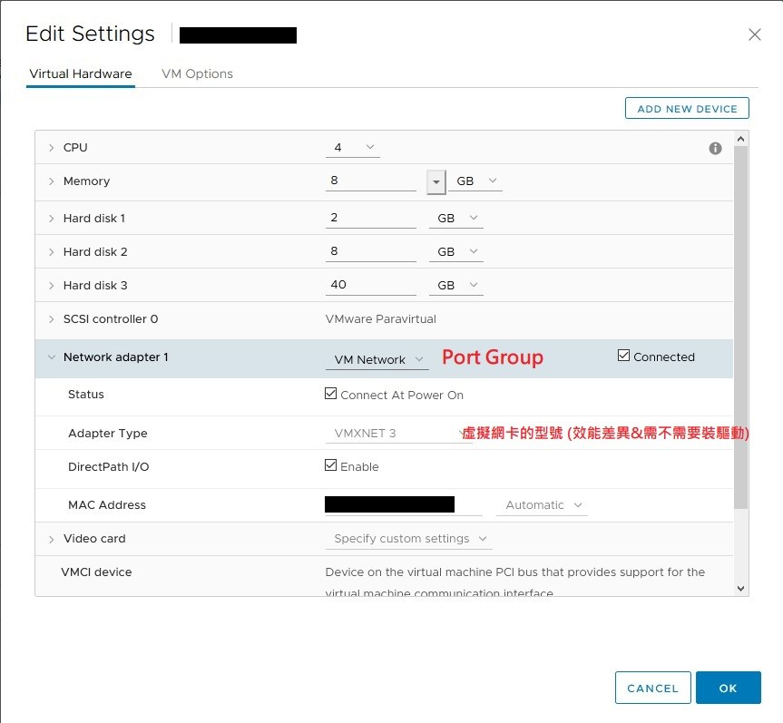

淺談 vDS (網路虛擬化 NSX-T 功能之一)
Contents

vDS 是什麼 ? 為什麼要用它 ?
vDS 全名 vSphere Distributed Switch 是 VMWare vSphere 產品線下 SDN (Software Defined Networking) 的產物，在 vDS 出來之前也有一款叫做 vSS (vSphere Standard Switch) 的產品。
比起 vSS 需要部屬在每一台 ESXi host ， vDS 統一部屬在 vCenter 而且有更強大的功能:
- 所有的虛擬環境網路設定必須一台一台設，而且要小心不能設錯。比如說 Port Group 名稱一個打錯，然後 vMotion 就過不去了…
- 雖然標準的虛擬網路功能，包括 L2 Frame Forwarding / VLAN 與 Trunking 對應 / Teaming 與 Load Sharing 等等功能在 vSS 與 vDS 都支援，但 vDS 內支援更多進階、企業等級的網路功能，比如說 flow monitor / flow mirror / IO Control & shaping / LACP / Multiple TCPIP Stack 等等…
未來若要新增 ESXi host 也只需要設定 Port Group 的 Uplink (實體網卡) 即可加入。
Port Group
在 SDN 的世界裡需要一點想像力， vDS 就好像擁有無限多實體埠口，而且可以分組的網路交換器，分組的部分就是 Port Group
當我們把一個虛擬機器的 vNIC 或是 vSphere 的 Kernel Port 接上 Port Group 時，相同 Port Group 內擁有相同的:
- VLAN ID
- Teaming / Load-Sharing Policy
- 安全 Policy 以及 QoS Policy

▲ 名詞對應關係

▲ VMKernel Adapter 有點像是 ESXi Kernel 用的虛擬網卡，用於 vMotion 等

▲ vmnic 就是實體網卡 (請把 VM 使用的 vNIC 分清楚)

▲ vSwitch

▲ VM 設定
相關連結
Author 老柯
LastMod 2022-12-26 (e867b60)